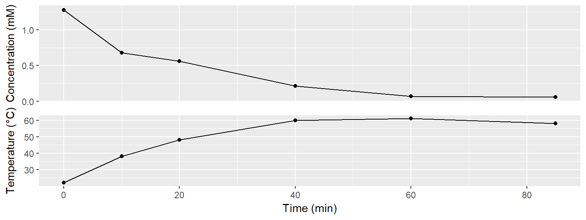
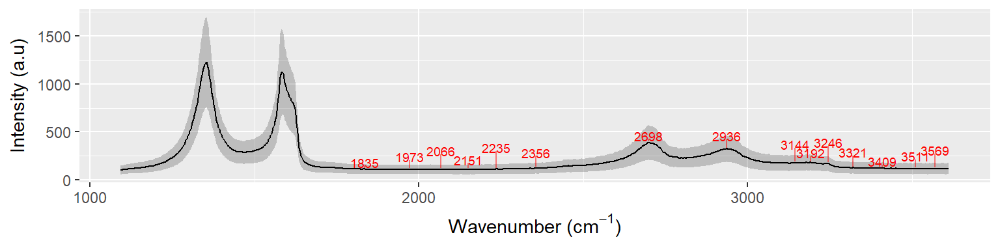
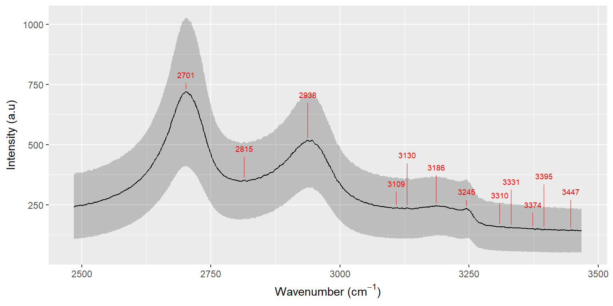
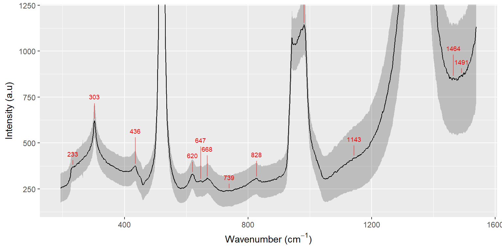

To demonstrate the full experiment of producing Gr-NH2, while monitoring the diazonium concentration, a small-scale experiment was conducted with the newly synthesised diazonium salt.
A 2 mM solution of 4-aminoethylbenzenediazonium was made by mixing 47 mg with 100 mL 0.1 M H2SO4. A 1 mM solution of 2-Naphtol was made by mixing 4.3 mg with 6 mL 10 % NaOH and 24 mL H2O. This makes it possible to make 4 mL samples for UV-Vis by mixing 3 mL of the 2-Naphtol and 1 mL diazonium-solution.
A 2x6 cm2 (0.7611 g) piece of graphite foil was used as the anode and a piece of stainless steel as the cathode. 10 V was applied between the electrodes for 85 min. Samples were extracted and temperature and current recorded at regular intervals.
The exfoliated graphene was then washed with copious amounts of water and acetonitrile to remove acid and residual diazonium-salt. In the end the pH of the washing water was approx. 6. The graphene was ultrasonicated in 100 mL DMF for 1 hour and left overnight. The topmost 90 mL were centrifuged at 4000 rpm for 2 hours, the grey supernatant removed and kept. The pellet, consisting of most of the graphene was mixed with 40 mL water and centrifuged for 30 min at 4000 rpm in order to remove most remaining DMF. The supernatant removed and the pellet ultrasonicated in 50 mL water for 30 min. It was then transferred to a 500 mL flask (empty flask weighed 157.7835 g), frozen in liquid nitrogen while rotating to create a shell, wrapped in paper and aluminium-foil and put on the freeze dryer. After freeze-drying 86 mg graphene was obtained.
The unexfoliated graphite foil weighed 0.3587 g after drying at 100 \(^\circ\)C overnight. This means that 0.4024 g was exfoliated in 85 min, and the yield of graphene obtained was 21 %. Some graphene is lost on the side of containers, or trapped in solvents. With more work, this can probably be increased significantly.
Samples for Raman were made from the remaining DMF-solution by the self-assembly method (10 mL H2O, 2 mL ethyl acetate on top and 1 mL graphene solution injected in a petri dish). After a few minutes, the graphene film could be picked up on SiO2 and dried in an oven.
library(tidyverse)
data171027 <- tribble(
~time, ~temp, ~cur, ~pot,
0, 22, 1.2, 10,
10, 38, 1.6, 10,
20, 48, 1.6, 10,
40, 60, 1.6, 10,
60, 61, 1.5, 10,
85, 58, 1.1, 10
)
path <- "data/raw_data/uvvis/20171027_GrNH2_azodye/"
specs171027 <- tibble(file = list.files(path = path, pattern = "*.csv")) %>%
mutate(data = map(paste0(path,file), read_delim, delim = ";", skip = 1)) %>%
mutate(time = stringr::str_extract(file, pattern = "\\d{2}(?=min)") %>% as.numeric()) %>%
unnest()
eps499 = 5.022 # L/cm*mmol
data171027 <- data171027 %>%
left_join(specs171027) %>%
mutate(conc = A/eps499 * 4) # Multiplied by 4 to get the diazonium-concentrationUsing the absorption of the extracted samples, it is possible to plot the diazonium-concentration as a function of time for the experiment.
When making the last samples (after 1 hour or more), the 2-Naphtol solution started to turn yellow, so I am at this point not completely sure whether the low concentrations recorded are only due to degradation of diazonium salt, or whether something happened to the 2-Naphtol.
g1 <- data171027 %>%
filter(nm == 499) %>%
ggplot(aes(time, conc)) +
geom_point() +
geom_line() +
theme(axis.text.x = element_blank(), axis.title.x = element_blank(), axis.ticks.x = element_blank()) +
labs(y = "Concentration (mM)")
g2 <- data171027 %>%
ggplot(aes(time, temp)) +
geom_point() +
geom_line() +
labs(y = "Temperature (°C)", x = "Time (min)")
(g3 <- cowplot::plot_grid(g1, g2, ncol = 1, align = "v"))
ggsave("data/derived_data/uvvis/20171027_GrNH2_azodye/20171027_azodye_time.png", width = 12, height = 8, units = "cm", dpi = 300)# # The following script was run on the raw Wire files after cosmic ray removal, and saving them as txt
# path <- "data/raw_data/raman/20171102_GrNH2_from_20171027/"
# raman171027 <- tibble(files = list.files(path, pattern = "*.txt")) %>%
# mutate(map = stringr::str_extract(files, "(?<=map\\s)\\d{1}")) %>%
# mutate(data = map(paste0(path, files), read_tsv, col_names = c("x", "y", "wavenumber", "intensity"), skip = 1)) %>%
# unnest()
#
# saveRDS(raman171027, file = "data/derived_data/raman/20171102_GrNH2_from_20171027/raman171027.RData")
raman171027 <- readRDS(file = "data/derived_data/raman/20171102_GrNH2_from_20171027/raman171027.RData") %>%
filter(files != "GrNH2 map 1.txt") %>% # Map 1 was done at too high intensity
filter(!(files == "GrNH2 map 2.txt" & y >= -3.5)) # Focus was lost during acquisition, so keep the in-focus spectra
add_peaks <- function(df, values, ...) {
values <- enquo(values)
peaks <- df %>%
pull(!!values) %>%
peakPick::peakpick(...)
mutate(df, peaks = peaks)
}
plot_peaks <- function(df) {
ggplot(df) +
geom_ribbon(aes(x = wavenumber, ymin = int_mean - int_sd, ymax = int_mean + int_sd), alpha = 0.25) +
geom_line(aes(wavenumber, int_mean)) +
geom_segment(data = . %>% filter(peaks) %>% mutate(nudge = rep(c(0,40,80,20,100,60)*1.5, nrow(.)%/%6, len = nrow(.))), aes(x = wavenumber, xend = wavenumber, y = int_mean + 10, yend = int_mean + 35 + nudge), color = "red", alpha = 0.5) +
geom_text(data = . %>% filter(peaks) %>% mutate(nudge = rep(c(0,40,80,20,100,60)*1.5, nrow(.)%/%6, len = nrow(.))), aes(x = wavenumber, y = int_mean + nudge, label = round(wavenumber)), size = 2.5, nudge_y = 70, color = "red") +
labs(y = "Intensity (a.u)", x = expression(paste("Wavenumber (", cm^-1, ")")))
}Raman maps were obtained from a sample deposited on SiO2. The spectra were acquired in HR Streamline mode with 1 s acquisition time at 10 % x 33 % intensity of the 514 nm laser. The actual maps are not plotted here. Instead the spectra in each mapped has been summarised by their mean (black line) ± 1 standard deviation (grey ribbon), which are plotted below. An automated peak finding algorithm was used to mark the peaks in the spectra (clearly it didn’t do a perfect job).
The first spectrum is obtained using the 1200 l/mm grating to get an overview. The spectra is as expected for oxidized and functionalised graphene. There is however a weak unusual feature at 3246 cm-1, which might be ascribed to N-H stretching in the amine. This would have to be tested against a control sample without the amine to be sure.
raman171027 %>%
filter(files == "GrNH2 map 2.txt") %>%
group_by(wavenumber) %>%
summarise(int_mean = mean(intensity), int_sd = sd(intensity)) %>%
add_peaks(int_mean, neighlim = 20, deriv.lim = 2, peak.min.sd = 4) %>%
plot_peaks()
A spectrum with the 2400 l/mm grating gives a closer look on the 2500-3500 cm-1 region. Once again the extra peak at 3245 cm-1 appears, but otherwise no unusual features are observed.
raman171027 %>%
filter(files == "GrNH2 map 3 high region.txt") %>%
group_by(wavenumber) %>%
summarise(int_mean = mean(intensity), int_sd = sd(intensity)) %>%
add_peaks(int_mean, neighlim = 20, deriv.lim = 4, peak.min.sd = 5) %>%
plot_peaks()
When looking at the lower range of the spectrum, 200-1500 cm-1, a range of peaks are observed, which is not usually seen for ordinary graphene. First of all, the large peak at 1350 cm-1 is the D-peak of graphene, while the peaks at 520 and 1000 cm-1 are related to the Si/SiO2 substrate.
If we have attached groups of Graphene-phenyl-CH2CH2NH2 (or perhaps -NH3+) we could expect to see C-N stretch between 1240-1020 cm-1, and it appears that there is a small should on the D-peak at approx. 1140 cm-1. It could also be from (CH2)n twisting vibrations, which should be strong in raman.
Furthermore there is a peak at 828 cm-1, which would correspond well with N-H wagging in a primary amine. However, together with the peak at 668 it could also be C-H out-of-plane vibrations from a parasubstituted benzene. It is also observed, that the peaks at 436 and 620 could be associated with aromatic ring deformations for a parasubstituted benzene (there is a peak missing at approx. 500, which might dissapear in the Si-peak).
The peaks at 303 and 436 cm-1 are listed as present in IR-spectra for primary amines, but not in a Raman table, so I am unsure what these say about the sample.
raman171027 %>%
filter(files == "GrNH2 map 3 low region.txt") %>%
group_by(wavenumber) %>%
summarise(int_mean = mean(intensity), int_sd = sd(intensity)) %>%
add_peaks(int_mean, neighlim = 10, deriv.lim = 4, peak.min.sd = 2) %>%
plot_peaks() +
coord_cartesian(ylim = c(150, 1200))
XPS has not been done yet, because the equipment has been broken.
This experiment, with the correct synthesis of the diazonium salt, proved it quite easy to follow the diazonium concentration during exfoliation. It seems that with increasing temperatures, the diazonium salt deteriorates quite rapidly, and we should probably look into adding more during the course of the experiment, and perhaps adding some active cooling to the exfoliation setup to keep the temperature down.
A thorough Raman characterisation was performed on this sample, and it brings out a lot of interesting features. The spectra will have to be compared with control samples, to be certain that it can be used as proof for the diazonium-functionalisation. This could for example be of samples produced in 0 mM and 10 mM diazonium solutions. It would be interesting to see the amount of information that could be inferred from this, e.g. could it be possible to determine whether the amine is protonated or not.
We still need to do XPS on this sample.